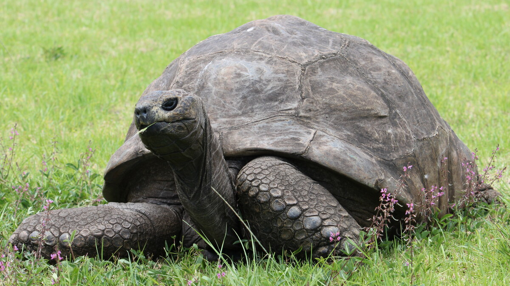
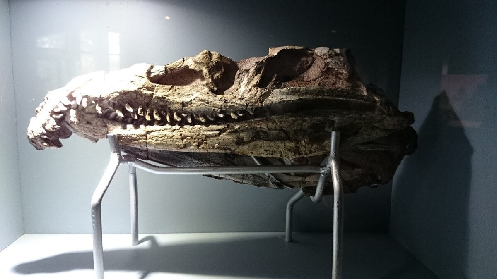

A morte de um mega-herbívoro como o elefante africano desempenha um papel ecológico transformador e duradouro sobre a paisagem das savanas, estendendo-se por quase uma década após o falecimento do animal. As conclusões partem de uma pesquisa de campo conduzida no Parque Nacional Kruger, na África do Sul, e publicada na conceituada revista Proceedings of the National Academy of Sciences (PNAS).
Cientistas monitoraram 40 locais de deposição de carcaças de elefantes com diferentes idades cronológicas. No primeiro momento, a massa corporal de várias toneladas comprime a vegetação e bloqueia a luz solar, provocando uma clareira temporária. À medida que os tecidos moles e a estrutura óssea se decompõem, contudo, ocorre uma liberação concentrada de nutrientes críticos, em especial nitrogênio, cálcio e fósforo, no solo circundante.
Essa injeção química massiva altera a flora local: em vez de diversidade indiscriminada, espécies pioneiras de gramíneas com teor nutricional e proteico muito superior passam a colonizar a área. Atraídos pelo pasto enriquecido, outros herbívoros da savana — como zebras, gnus e antílopes — passam a frequentar assiduamente os sítios das carcaças antigas, mantendo o pastoreio ativo e redistribuindo sementes.
A pesquisa demonstrou que o enriquecimento mineral do solo permanecia detectável mesmo nos locais mais antigos amostrados, onde os elefantes haviam morrido quase oito anos antes. O estudo evidencia que os grandes animais moldam os ecossistemas terrestres não apenas através de seus hábitos em vida, mas como agentes fundamentais da ciclagem geoquímica após a morte.
🔗 Fontes e Referências Oficiais Consultadas
🧭 Outras Notícias Recentes
Acompanhe outros acontecimentos e descobertas verificadas no portal.

ANIMAISTartaruga Jonathan, estimada em 194 anos, oferece pistas biológicas sobre a longevidade
Sequenciamento genético do animal terrestre mais velho do mundo revela variantes em vias de reparo de DNA e proteção contra o envelhecimento celular.
Ler notícia
ANIMAISFóssil egípcio de 50 milhões de anos é reclassificado como nova espécie de crocodiliano
Tomografia computadorizada do crânio encontrado perto do Cairo revela características anatômicas únicas e batiza o predador pré-histórico Herugavialis cairensis.
Ler notícia TECNOLOGIA
TECNOLOGIA
Microsoft apresenta o chip de IA Maia 300 e planeja expansão em escala para 2027
O Maia 300 foi projetado para executar tarefas pesadas de inteligência artificial e auxiliar a Microsoft a ampliar sua eficiência em data centers.
Ler notícia